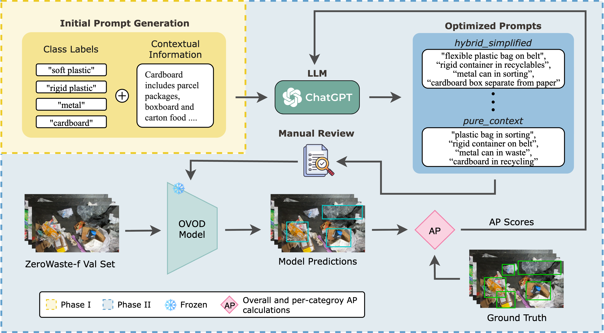
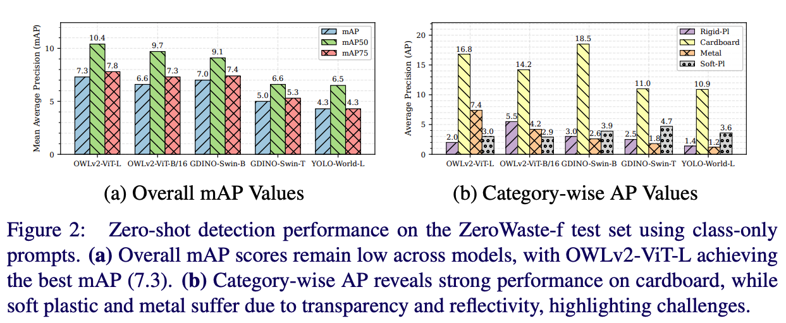
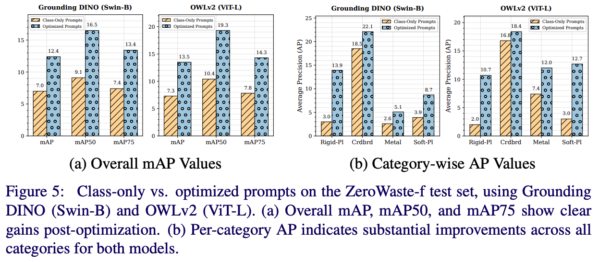
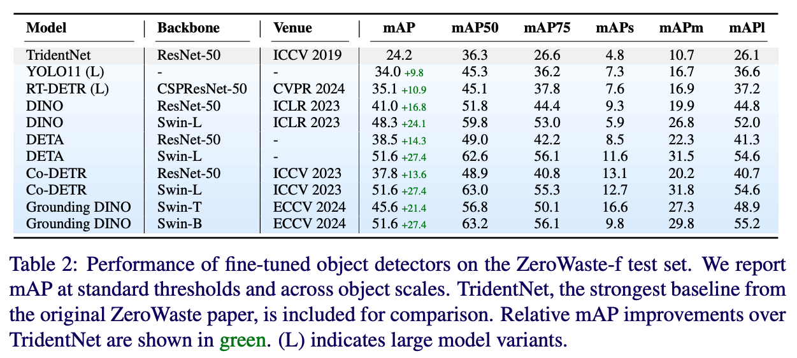
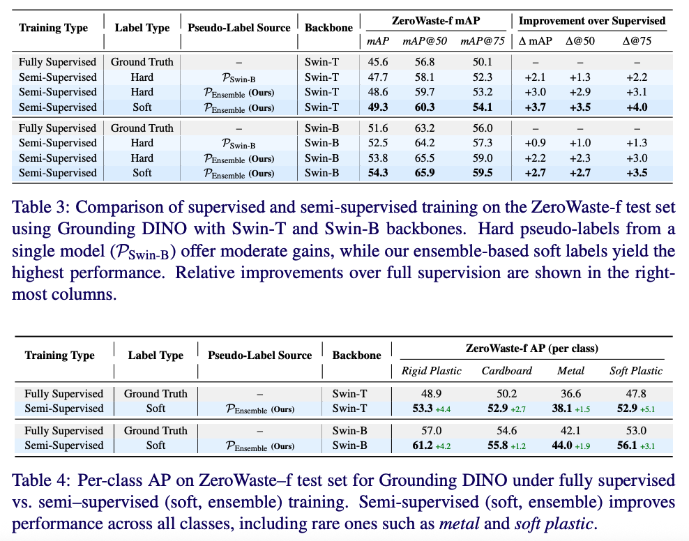

Robust and Label-Efficient Deep Waste Detection
arXiv Code (GitHub) Citation (BibTeX)
Abstract
Effective waste sorting is critical for sustainable recycling, yet AI research in this domain lags behind commercial systems due to limited datasets and reliance on outdated detectors. We advance AI-driven waste detection by benchmarking open-vocabulary detectors, establishing strong supervised baselines, and proposing a robust semi-supervised framework. Using the ZeroWaste dataset, we demonstrate that: (1) LLM-optimized prompts improve zero-shot detection, (2) fine-tuned transformer-based detectors set new baselines of 51.6 mAP, and (3) ensemble-based soft pseudo-labeling produces high-quality annotations for 6,065 unlabeled images, boosting downstream detectors beyond fully supervised training.
Highlights
Zero-shot OVOD
Class-only prompts underperform, but LLM-optimized prompts boost OWLv2 from 7.3 → 13.5 mAP.
Fine-tuned Baselines
Co-DETR, DETA, and Grounding DINO (Swin-B) achieve 51.6 mAP, more than 2× stronger than CNN baselines.
Semi-Supervised
Ensemble-based soft pseudo-labels push Grounding DINO (Swin-B) to 54.3 mAP.
Final Dataset
Released 33,075 pseudo-annotations for ZeroWaste-s, improving YOLO11 (+6.3 mAP) and RT-DETR (+4.3 mAP).
Method Overview
Our framework combines three pillars: (1) zero-shot benchmarking of OVOD models on industrial waste data, (2) supervised fine-tuning of modern detectors, and (3) ensemble-based pseudo-labeling to exploit unlabeled data. The pipeline fuses predictions across models using Weighted Box Fusion and adjusts confidence scores via spatial consistency and inter-model agreement.
Results
Zero-Shot OVOD Evaluation
Grounding DINO, OWLv2, and YOLO-World show weak performance on ZeroWaste with class-only prompts (≤7.3 mAP). Using GPT-4o optimized prompts substantially boosts performance (OWLv2: +6.2 mAP).
 Fine-Tuned Baselines
Transformer-based detectors dramatically outperform CNN baselines. Co-DETR (Swin-L), DETA (Swin-L), and Grounding DINO (Swin-B) each achieve 51.6 mAP, surpassing TridentNet’s 24.2 mAP.
Semi-Supervised Learning
Our soft ensemble pseudo-labeling strategy significantly improves detection. Grounding DINO (Swin-B) rises from 51.6 → 54.3 mAP, with consistent per-class gains including rare categories like metal.
Dataset & Settings
We adopt the ZeroWaste dataset collected from an industrial Material Recovery Facility:
- ZeroWaste-f: 4,503 labeled images with bounding boxes for cardboard, soft plastic, rigid plastic, and metal.
- ZeroWaste-s: 6,212 unlabeled images for semi-supervised learning.
- Challenges: high clutter, occlusion, deformation, and severe class imbalance.

Final Pseudo-Annotations
Our ensemble-generated pseudo-labels for ZeroWaste-s yield 33,075 bounding boxes across 6,065 images. Training detectors solely on these annotations provides consistent gains:
- YOLO11 (Large): +6.3 mAP
- RT-DETR (Large): +4.3 mAP
Citation
@misc{abid2025robustlabelefficientdeepwaste,
title = {Robust and Label-Efficient Deep Waste Detection},
author = {Hassan Abid and Khan Muhammad and Muhammad Haris Khan},
year = {2025},
eprint = {2508.18799},
archivePrefix = {arXiv},
primaryClass = {cs.CV},
url = {https://arxiv.org/abs/2508.18799}
}